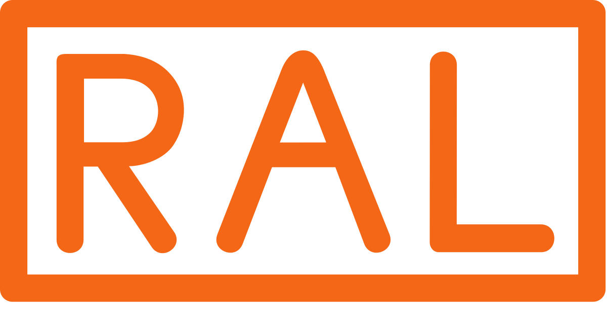
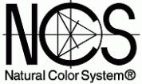

Zvanični zastupnik kompanije BESA u Crnoj Gori. BESA je proizvodjač lakova, farbi,
gitova, razredjivača širokog spektra primena. BESA je osnovana 1963. godine, i za
svojih 50 godina postojanja specijalizovala se iz oblasti specijalnih
premazi i farbi, namenjenih za industriju, industrijsku tehniku i popravke
karoserije i postala jedna od vodecih proizvodjača industrijskih sistema za
toniranje u Evropi.
Odabir boja po , , UNE.
Sistem boja za industrijsku namenu – URKI-SYSTEM Ovaj sistem boja je sačinjen od 27 pigmenata boja i preko 70 različitih vrsta veziva, koja pri mešanju sa pigmentima stvaraju premaze sa svojstvima prilagođenim različitim vrstama namene, podlogama na koje se nanose, načinu aplikacije itd. Ono što je dodatna prednost ovog sistema je sertifikacija pojedinih tehnologija u skladu sa standardom EN ISO 12944, od strane nezavisnih hemijskih laboratorija. Uz pomoć ove vrste podrške, možemo standardizovati ponudu za svaku vrstu zahteva – različite lokacije primene, vlažnosti vazduha, trajnosti u određenim atmosferskim uslovima, nivou sjaja itd.Korišćenjem URKI-SYSTEM-a, moguće je dobiti više od 12,000 nijansi boja po različitim kolor kartama (RAL, Pantone, Afnor, NCS, Color Truck…). Za pripremu traženih nijansji koristi se specijalni software razvijen od strane proizvođača BESA, a uz pomoć preciznih elektronskih vaga koje mere količine do preciznosti od 0.1 gr.
BESA kolor karta za INDUSTRIJSKA VOZILA Sadrži ogroman broj boja najvažnijih proizvođača, kao i boje voznog parka i autobusa.
BESA grafikon za INDUSTRIJSKA VOZILA nudi najčešće korišćene metalne boje.
URKI-FLI, dvokomponentni brzosušivi lak, razvijen je za nanošenje na emajlove na bazi vodenog sistema i na bazi rastvarača. Lak ima odličnu UV zaštitu, otpornost na ogrebotine i visoku otpornost na hemikalije. URKIFLI karakteriše odličan izgled i brzina sušenja. Na primer, automobil je potpuno spreman 40 minuta nakon nanošenja laka i ne zahteva upotrebu infracrvenog sušenja, što u velikoj meri smanjuje ciklus lakiranja i povećava produktivnost lakirane boje.
URKISOL 150 Razređivač za međufazne slojeve
URKISOL 300 Univerzalni razređivač Ektra
URKISOL 500 Razređivač posipača
URKISOL 170 Sintetički hlorovani gumeni razređivač (sprej za pištolj)
URKISOL 222 Sintetički razređivač (četkica-valjak)
Multifunkcionalni kit BESA je dvokomponentni poliesterski kit niske gustine. Lako se nanosi. Karakterišu ga finozrnata, bez pora, mala potrošnja i velika sposobnost punjenja. Izvrsno prijanjanje na čelične, pocinčane, pocinčane i prethodno brušene aluminijske površine. URKI je formulisan sa specijalnim dodacima koji poboljšavaju uobičajena svojstva kita: -Ovo je „veoma lagan“ kit koji olakšava nanošenje, nanesete tankim slojem. Potpuno odsustvo pora. - Veoma lako brušenje, čak i posle 2 dana.
Sistem je dizajniran za farbanje električne opreme (transformatora), vjetroelektrane, lučke dizalice i bilo koje druge konstrukcije i proizvode za koje su potrebni najviši standardi zaštite od korozije. Pruža vrhunsku zaštitu zbog visokog sadržaja cinka. Prekriva se tako da se gornji sloj vlaži po vlažnom nakon 20-30 minuta.
Urki-NATO - nudi odlična svojstva tvrdoće, elastičnosti, otpornosti na razne materije, kao što su sapun, gorivo, masti, ulje, hemikalije itd.
Kod nas možete nabaviti i svu prateću opremu.
Linkovi i materijali za preuzimanje:
BESA websajt
Auto katalog
Industrijski katalog
URKI sistem katalog